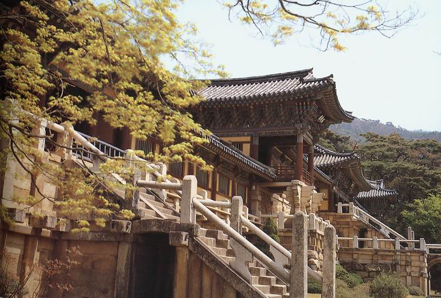

-

경주 불국사 다보탑
다보탑과 석가탑(경주 불국사 삼층석탑, 국보)은 우리나라의 가장 대표적인 석탑으로, 높이도 10.29m, 10.75m로 비슷하다. 절내의 대웅전과 자하문 사이의 뜰 동서쪽에 마주 보고 서 있는데, 동쪽탑이 다보탑이다. 다보탑은 특수형 탑을, 석가탑은 우리나라 일반형 석탑을 대표한다고 할 수 있다.두 탑을...
-

경주 불국사 사리탑
불국사 강당 뒤쪽의 보호각에 보존되어 있는 사리탑으로, 「불국사사적기(佛國寺事蹟記)」에서 말하는 '광학부도(光學浮屠)'가 곧 이 사리탑을 가리킨다는 견해도 있지만 현재로서는 여래의 사리탑인지 승려의 사리탑인지는 분명하지 않다.겉모습이 석등과 비슷하게 생긴 사리탑으로,사리를 모시는 탑신(塔身)을...
-
경주 불국사 삼층석탑
경주 불국사 삼층석탑과 경주 불국사 다보탑(국보)은 절의 대웅전 앞 뜰 동서쪽에 각각 세워져 있는데, 서쪽탑이 삼층석탑이다. 탑의 원래 이름은 ‘석가여래상주설법탑(釋迦如來常住設法塔)’으로, ‘석가탑’ 이라고 줄여서 부른다.두 탑을 같은 위치에 세운 이유는 ‘현재의 부처’인 석가여래가 설법하는 것을 ...
-

경주 불국사
불국사는 통일신라 경덕왕 10년(751) 김대성의 발원에 의해 창건된 사찰로, 과거·현재·미래의 부처가 사는 정토(淨土), 즉 이상향을 구현하고자 했던 신라인들의 정신세계가 잘 드러나 있는 곳이다.『삼국유사』에는 김대성이 전생의 부모를 위해서 석굴암을, 현생의 부모를 위해서 불국사를 지었다고 전해진다. 그러나...
-
경주 석굴암 석굴
석굴암은 신라 경덕왕 10년(751)에 당시 대상이었던 김대성이 창건을 시작하여 혜공왕 10년(774)에 완성 하였으며, 건립 당시에는 석불사라고 불렀다. 경덕왕은 신라 중기의 임금으로 그의 재위기간(742∼765) 동안 신라의 불교예술이 전성기를 이루게 되는데, 석굴암 외에도 불국사, 다보탑, 삼층석탑, 황룡사종 등...
-

경주 불국사 연화교 및 칠보교
불국사의 예배공간인 대웅전과 극락전에 오르는 길은 동쪽의 청운교와 백운교, 서쪽의 연화교와 칠보교가 있다. 연화교와 칠보교는 극락전으로 향하는 안양문과 연결된 다리로, 세속 사람들이 밟는 다리가 아니라, 서방 극락세계의 깨달은 사람만이 오르내리던 다리라고 전해지고 있다. 전체 18계단으로, 밑에는 10단의...